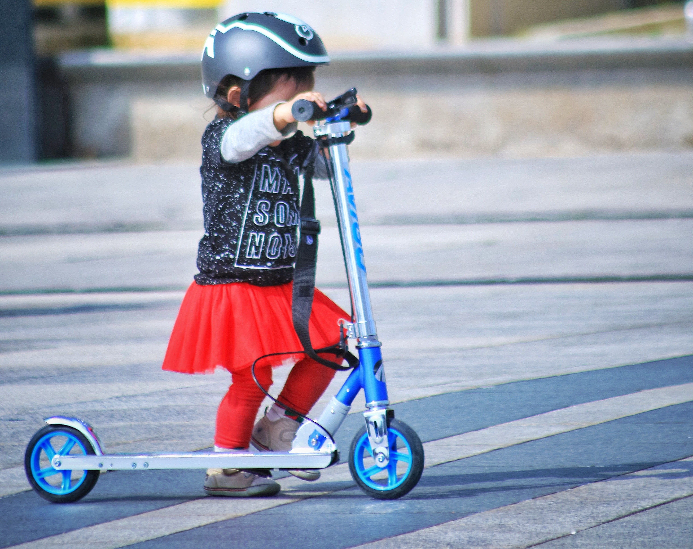
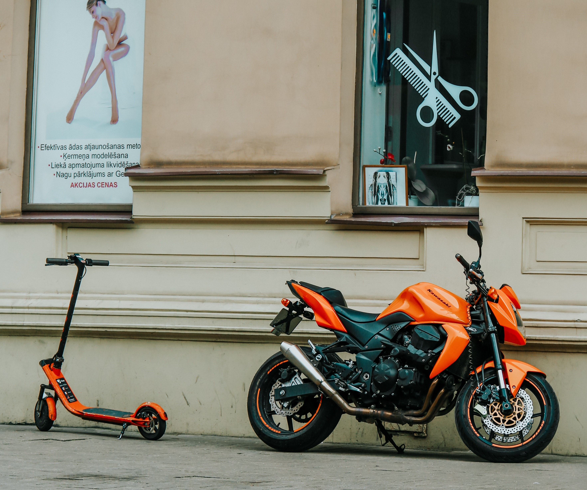
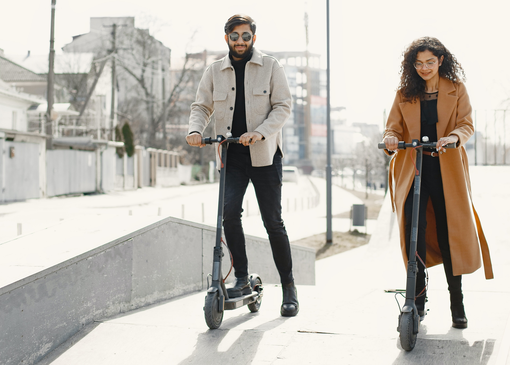
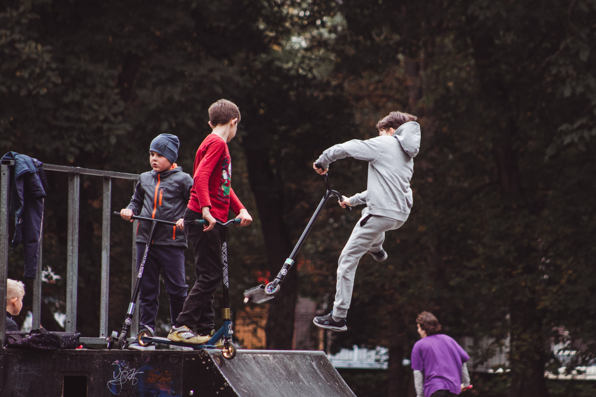

Самокати
Види
По кількості колес:
По типу використання:
Конструкція
Рама
| Тип | Плюси | Мінуси |
|---|---|---|
| Складні | Зручно транспортувати | Можуть з'являтися неприємні скрипи, меньш міцний, потребує додаткового нагляду |
| Цільні | Максимально надійні та міцні. Можно використовувати для екстимальної їзди | Не зручний в транспортуванні. |
Дека
| Широка | Вузька |
|---|---|
| Здатна забеспечувати максимальну стійкість | Збільшує меневриність і дає змогу швидще розігнатися |
Може виготовлятися з авіаційного алюмінію, алюмінію, пластика та дерева.
Кермо
Буває Т-образне та У-образне кермо. Також можливі віріанти зі складним та регулірованим кермом.
Грипси допомагають краще і надійніше триматися. Частіше всього використовуються з пеноматеріалу.
Колеса
Амортизатори
Пружина амортизатора на передньому колесі знімає вібрації з кермової стійки і навантаження з підшипника, значно облегшує керування самокатом, незначно знижує швидкість їзди.
Деякі моделі також оздоблені амортизатором на задньому колесі для максимально комфортного катання навіть по дуже нерівній поверхні.
Дитячі самокати
Зазвичай мають маленькі габарити, легку вагу, просту конструкцію, яскравий дизайн. Широка платформа для більшої стійкості і зручноті дитини. Укомлектований додатковими аксесуарами: дзвінок, фляготримач, ліхтарик, декоративні елементи. Система рульового управління за рахунок поворота корпусу
Міські самокати
Основна задача таких самокатів забеспечити максимальний комфотр при переміщені по дорозі чи в парку. Вони легкі, мають просту складну конструкцію, м'які колеса (150-230мм). Амортизатори знижують вібрацію та ударне навантаження, забеспечує плавний хід і дозволяє маневрувати ти минувати нерівности або їхати по пліточному покриттю.
Електричні
Рухаються за рахунок електромотору та ніг. Маленькі колеса забеспечують міцність. При виборі враховується відстань, яку можно проїхати на одному заряді, загальна вага та максимальна швидкість.
Трюкові